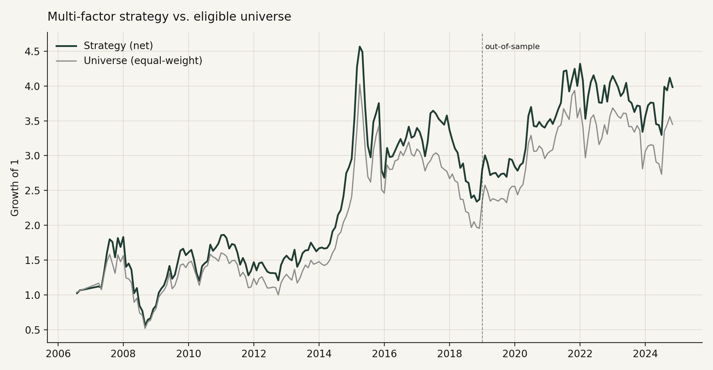
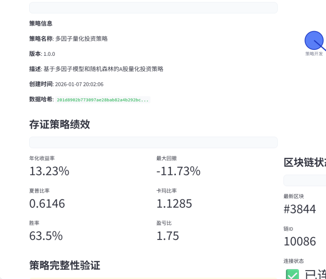
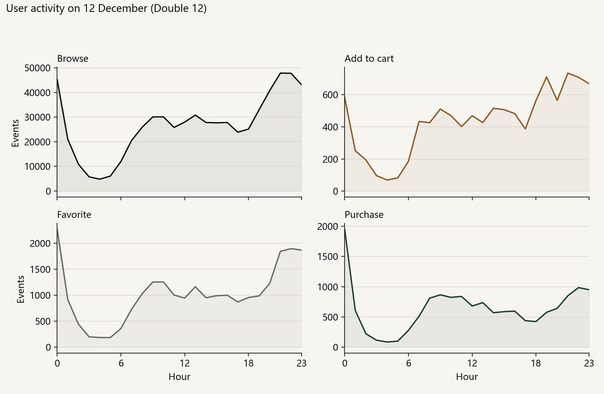

Selected Work
六个项目，来自课程、实习、竞赛和一篇合作论文。每个项目都写了局限——因为知道一个模型哪里不行，比它跑出多高的收益更重要。

多因子量化策略
我把“买便宜的好公司”拆成了三个可以排序的因子。
2005–2024 年 A 股月频数据。按板块做 PE 横截面分位，叠加归母净利润增长率与总负债增长率，40/40/20 加权；每月选全市场前 10%，计入佣金、印花税与滑点。全样本 vs 市值加权 +3.25%；2019–2024 vs 等权 -0.90%。
- 8.06%年化（净）
- 0.022IC · t=3.01
- 19.9%月换手
局限价格用前复权、EPS 用名义值，PE 水平可能有偏；行业只能用板块代替。
读完整项目 →
量化分析系统
策略写完不算完，我把它做成了一个能跑、能查、能验证的系统。
Baostock 取数 → 技术指标 → 数据质量报告；六个因子 + 随机森林 → 月度回测；策略文件哈希上链；三个模块集成进 Streamlit。
- 8文件上链
- 13.23%年化
- 0.61夏普
局限因子由课程给定；样本只有 5 只股票；随机森林只用于排序。
读完整项目 →
绿色技术创新与区域碳排放
我负责的那部分，让我第一次遇到“结果不听话”。
30 个省份 2017–2021 面板。DEA-Malmquist 测算 TFP；Moran's I；SAR/SEM；中介效应；分东中西。我负责数据、空间权重矩阵与模型估计。
- 30省份
- 5年
- 第二作者5 人合作
局限空间项本身不显著，“空间溢出”没有得到稳健支持；TFP 中介在 10% 水平。
读完整项目 →
穗乐康 · 乡村 IP 打造平台
我把一个乡村 IP 的想法，做成了一份投资人能读的三年财务模型。
10 人团队负责人。双收益模式与 7 条收入线；500 万注册资本股权、分红与再融资；三年三表与退出机制。
- 5,632 万三年收入预测
- 189.2%ROI
- <2 年回收期
局限收入是预测，且主要来自管理咨询与数据分析，不是 IP 授权；三表之间存在口径差异。
读完整项目 →
拓尔思 · 数据分析实习
我在百万级真实数据上做过完整的数据分析流程，也犯过评估上的错。
淘宝用户行为约 1,225 万条：清洗、时段与转化路径、RFM 分层；信用卡欺诈 100 万条、8.74% 正样本：SMOTE + XGBoost；台风强度：KNN；FineBI 看板。
- 1,225 万行为记录
- 8.74%欺诈正样本
- 0.645台风 R²
局限SMOTE 在划分训练/测试之前做的，99.86% 是在合成测试集上的结果。
读完整项目 →中信证券 · 行业研究
我能在 20 天里，把一个陌生行业讲清楚。
新能源汽车：市场规模、政策、技术、竞争格局；PEST/SWOT；补贴退坡驱动技术内生化；固态电池与智能驾驶。
- 20 天实习
- 新能源行业
- 1 份行业简报
局限只够搭框架，不够做深度；没有独立完成估值模型。
读完整项目 →其他经历
- 中国邮政储蓄银行 · 客户服务2024
- 平安银行广州分行 · 市场调研2023
- 国家励志奖学金 ×22023–24
- 院长奖学金 / 学业优秀奖 / 创业实践奖2025
- 中国国际大学生创新大赛 · 校赛银奖2024
- “互联网+” · 校铜 / 挑战杯 · 校铜2023–24
- FRM Level I · FCA · CFA Candidate2025
我怎么判断一个项目好不好
不是看收益有多高，是看它能不能被另一个人复现、被另一种设定检验。
-
01
数据说清楚了吗
来源、区间、清洗规则、缺失值怎么处理。如果一段数据不能在十分钟内解释清楚，它就不该进入模型。
-
02
方法可复现吗
参数、随机种子、代码、运行顺序。结果如果不能被重跑，它就只是一次演示。
-
03
结果经得起换设定吗
换基准、换成本、换样本区间，结论还在不在。很多超额收益，只是基准选错了。
-
04
局限敢写出来吗
如果不敢，说明我自己也没想清楚。知道一个模型哪里不行，比它跑出多高的收益更重要。
About
从金融科技到金融工程。我一直在做同一件事：把模糊的问题变成可以计算、可以检验的东西。
我叫陈如意。本科在广东财经大学读金融科技，现在在香港城市大学读金融工程。
我做过两份很不一样的工作。在邮储网点，我给大约 400 位客户办过开户、存取款和业务咨询；在拓尔思，我用 Python 处理过千万级的用户行为数据。一端是一个人，一端是一千万条记录。
中间是我这几年一直在做的事：把模糊的问题变成可以计算、可以检验的东西。在“穗乐康”，我把一个乡村 IP 的想法做成了三年财务模型；在论文里，我用空间计量检验绿色创新如何影响碳排放；在量化项目里，我把选股的直觉写成了因子、回测和一套能跑的系统。
这些项目大多来自课程、实习训练和竞赛。它们不是生产系统，但我尽量按研究的标准要求它们：写清楚数据、方法和局限。
我不认为模型能替代判断。但好的模型，能让判断更便宜。